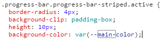
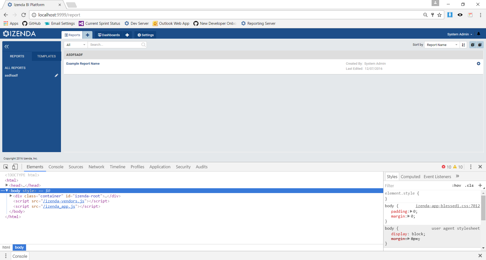

Note
Whenever possible, we encourage you to adhere to the official CSS Guidelines for cascading styles. For the main styles, we recommend to make a copy of the izenda-us.css to modify and add the reference to the index.html.
Location of CSS¶
- izenda-ui.css : Main location for CSS Stylings.
Customization (Simple)¶
The simplest way to change an element’s color is to find the CSS selector corresponding to an HTML element and replace the listed color with your new color. In Notepad++ , this can be accomplished by pressing CTRL + F and navigating to “Replace” tab.
{kind=link}
Note
For best practice, we recommend that you “Replace All” to maintain consistent look-and-feel.
Customization (Scalable)¶
CSS Variables allow you to change one value in the CSS to change all of our CSS selectors.
Note
This solution is currently supported in Chrome and Firefox.
Add the following on top of izenda-ui.css
Replace all instances of #1c4e89 with var(–main-color).
Example Replacement:
Result on page.
{kind=link}
Key Styling Colors¶
Key styling for Chrome and Firefox is located in the file izenda-ui.css. Below, we list 11 variables that will help
you stylize your application.
Note
It is important to keep a record of each change, similar to the table below. This ensures that you can recreate your style if it’s unintentionally overwritten during an update.
| Identifier | Occurences | Initial color | Recommended css variable |
Color sample |
|---|---|---|---|---|
| MAIN STYLE COLOR | 31 | #1c4e89 | –main-co | |
| SUB STYLE COLOR | 11 | #10427c | –sub-style-co | |
| Fontello (note: trivial design color) |
1 | #b3cbda | –fontello-co | |
| Trans-color | 124 | transparent | -trans-color | |
| Menu text and panel color | 138 | #fff | –menu-text-and-panel-co | |
| Panel Borders Color | 38 | #EEE | –panel-border-co | |
| Main Background Color | 10 | #e4e8eb | –main-bg-co | |
| Search Icon And Data Source Borders |
43 | #DEDEDE | –search-ico-and-ds-borders | |
| Report Part Edit-Mode Tab Borders |
18 | #ddd | – rp-edit-mode-tab-borders | |
| Error Color #1 | 12 | #D0021B | – error-1-co | |
| Error Color #2 | 7 | Red | – error-2-co |
Example Color Changes¶
MAIN STYLE COLOR
SUB STYLE COLOR
Trans-color
Menu text and panel color
Panel Borders Color
Main Background Color
Search Icon And Data Source Borders
Sample Code¶
The following code sample can be added to the top of your izenda-ui.css . If you replace the color code provided in the CSS comments with the name of the variable, the new color will be applied. The results will be striking.
Note
Remember, CSS variables are only supported in Chrome and Firefox.
root {
--main-co: pink; /* #1c4e89 */
--sub-style-co:green; /* #10427c */
--fontello-co: #b3cbda; /* #b3cbda */
--menu-text-and-panel-co: purple; /* #fff */
--panel-border-co: indigo; /* #EEE */
--main-bg-co: teal; /* #e4e8eb */
--search-icon-and-data-source-borders: yellow; /* #DEDEDE */
--rp-edit-mode-tab-borders: blue; /* #ddd */
--error-1-co: pink; /* #D0021B */
--error-2-co: yellow; /* red */
--garfunkle: orange; /*Arbitrary variable created #f5f5f5 */
}
Visually Editing CSS¶
You would usually need to refresh the page to see updates to your application. Fortunately, Chrome provides the functionality to edit the working instance of a page’s CSS to see real-time changes. The following example uses CSS Selectors.
Note
This CSS instance is not saved when you edit it. If you break your CSS, simply reload the page and your sandbox will be refreshed. You will need to choose to save before refreshing your page.
To access Chrome’s Developer Tools, press F12 to open the console.
Toggle over to the Sources tab and locate the CSS file you wish to edit.
Note
To increase screen real-estate, you can pop the Developer Tool out into a separate window
Develop!
To save, right click on the file on left-hand panel and select save.
Other Helpful Tools¶
The following can be found in the Chrome Web Store for download.
CSS Viewer: Allows you to see the CSS applied to a particular element.
Common CSS Customizations¶
Customize the default cell padding in grid report parts
.izenda .table .table-cell-content { padding: 5px !important; }
Fig. 446 Default grid padding
Fig. 447 After customizing the grid’s padding
Customize the width of the report list to increase the width of the report name
.panel.report-detail .izenda-GridLayout-Row .izenda-GridLayout-Col2 { width: 41.66667% !important; } .panel.report-detail .izenda-GridLayout-Row .izenda-GridLayout-Col6 { width: 25% !important; } .panel.report-detail .izenda-GridLayout-Row .izenda-GridLayout-Col3 { width: 25% !important; } .panel.report-detail .izenda-GridLayout-Row .izenda-GridLayout-Col1 { width: 8.33333% !important; }
Fig. 448 Default report list widths
Fig. 449 After customizing the report list widths
Hide filters’ description including the type and operator in the report viewer
.filter-label .operator { visibility: hidden !important; } .filter-item-label { pointer-events: none !important; }
Fig. 450 Filter with visible (default) description
Customizing the Report Designer Tooltips & Overlay¶
Izenda version v2.7.0 and greater feature new tooltips and overlays to provide guidance to the user for creating reports.
These items can be customized using the CSS samples below:
/* Customize the tooltip */ .tooltip .tooltip-inner.info { background-color: #8e8e8f; color: #fff; font-size: 13px; max-width: 250px; padding: 10px; } /* Customize the overlay */ .izenda .izenda-ReportDesigner .izenda-ReportDesigner-Overlay { background-color: rgba(255,105,180,0.75) }